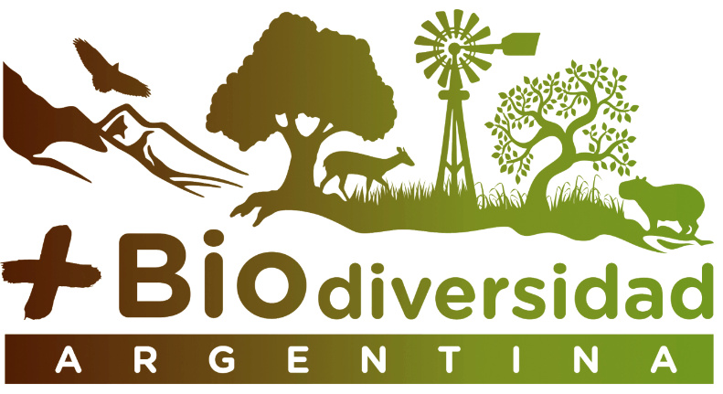
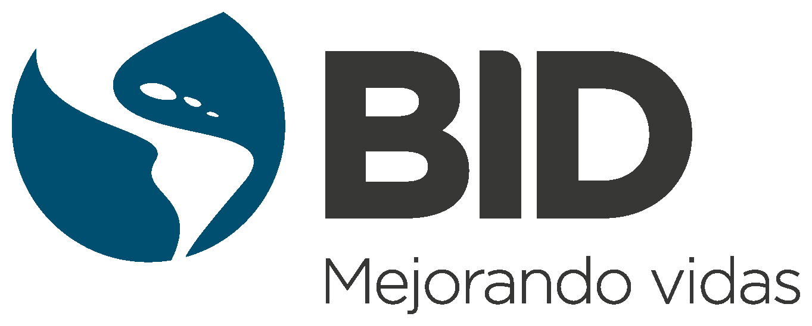
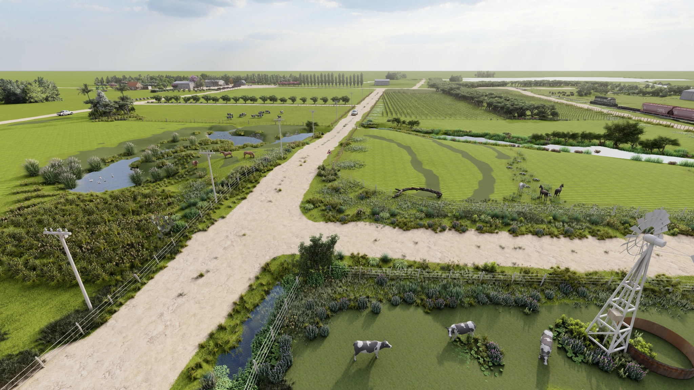

Instituciones
Material desarrollado en el marco del Proyecto Nacional Biodiversidad de INTA, con apoyo del BID.
Los espacios de conservación son ambientes naturales, seminaturales o artificiales que fomentan la conservación de la biodiversidad mediante el mantenimiento o restauración de hábitats para diferentes grupos de flora y fauna contribuyendo a mejorar la producción de los agroecosistemas.
Reconocé sectores del paisaje productivo que pueden conservar biodiversidad, sostener funciones ecológicas y aportar beneficios concretos para la producción.


El objetivo de esta página es que el productor o actor asociado a los agroecosistemas de la región centro de Argentina pueda, visualizando esta infografía, reconocer qué zonas del campo puede destinar a manejar para conservar la biodiversidad y las funciones que aporta.
Mapa interactivo
Al finalizar el video queda una imagen navegable: cada círculo corresponde a un espacio de conservación.

Cada círculo señala un espacio de conservación. Tocá uno para abrir su ficha y comparar el paisaje modelo con situaciones reales del campo.
La infografía hace referencia al nucleo agrícola de la zona centro de Argentina, principalmente la ecorregión pampeana y parte de Chaco y Espinal.
Modo campo
Durante una recorrida por el campo, elegí el espacio que más se parece a lo que tenés delante. La plataforma te sugiere fichas posibles para comparar y hacer una inspección rápida.
Fichas
Cada ficha resume lo esencial: cómo reconocer el espacio, qué podés mejorar y qué beneficios aporta a la producción y la biodiversidad.
Implementación
Estos pasos ordenan el trabajo: reconocer el campo, definir objetivos, diagnosticar, implementar, monitorear y mejorar la propuesta.
Proyecto
Material desarrollado en el marco del Proyecto Nacional Biodiversidad de INTA, con apoyo del BID.
Infografía completa, láminas conceptuales, fichas breves por espacio de conservación, videos y documento técnico de referencia.
Descargar informe técnicoCapacitación, recorridas técnicas, trabajo con productores y reconocimiento inicial de oportunidades de conservación en agroecosistemas.
Para consultas, articulación técnica o uso institucional de los materiales, contactar a:
Fracassi Natalia (Fracassi.natalia@inta.gob.ar) y Medero Laura (medero.silvina@inta.gob.ar)
Fracassi, N., Suarez, R., Solari, L., Voglino, D., Merke, J., Somma, D., Gutiérrez, R., Canavelli, S., Calamari, N., Gavier, G., Contreras, C., Taraborelli, P., Weyland, F., Herrera, L., Decarre, J., Medero, L., Vera Candioti, J., Cavigliasso, P., Bernad, L., Damonte, J., Landi, I., Martínez, N., & Román, L. (2024). Espacios de conservación en agroecosistemas [Infografía]. Instituto Nacional de Tecnología Agropecuaria. Repositorio Institucional INTA. https://repositorio.inta.gob.ar/handle/20.500.12123/17068